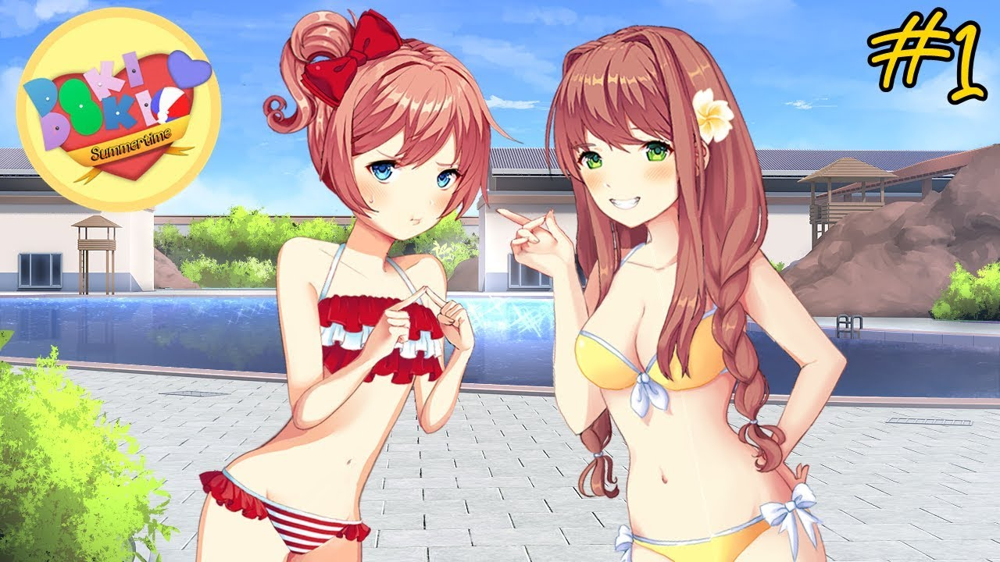

DDLC Summertime
Finalmente, escola acabou! Você é colocado no lugar de um jovem bonito, mas recluso. Já se passou mais de meio ano desde que você falou com sua amiga de infância, Sayori. Um dia, ela inesperadamente o convida para se juntar a ela e à oradora da turma da escola, Monika. Em uma piscina, esse evento único acabou sendo o começo de algo novo e emocionante para uma das quatro garotas. Doki Doki Summertime é uma modificação para o romance visual popular de 2017, Doki Doki Literature Club. Ao contrário do jogo original, Doki Doki Summertime é uma aventura cómica onde o jogador pode ficar a conhecer a fundo todas as personagens. Suas interações e confissões visam mostrar seus lados humanos sem a obsessão estereotipada para o personagem principal. Ao contrário de muitas outras modificações, este jogo evita clichês esgotados, ocasionalmente até zombando deles. A progressão da história deve ser parecida com o processo natural de as pessoas se conhecerem ao longo de uma semana. Não há elementos de terror nesta história. No entanto, isso não significa que o conflito não seja esperado.
⬇ Download